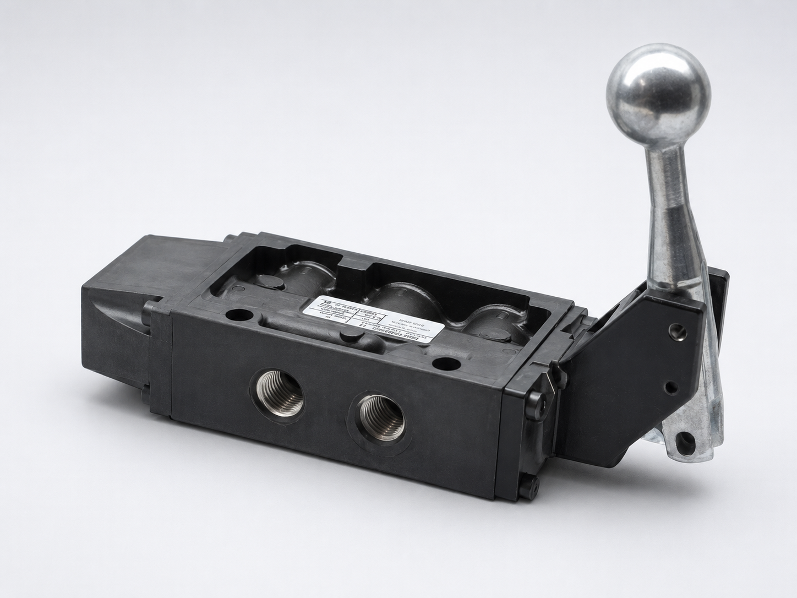

IMI Norgren
Válvula manual 5/2 Nugget 200
Número de parte: K71DA00KS1KL0
Ver especificaciones
- Operación: 5/2
- Accionamiento: palanca manual con retorno por resorte
- Puerto: 1/4 NPT
- Presión de operación: 0.34 a 10.35 bar
- Equivalencia: 4.91 a 150 psi
Precio de referencia: USD $260.85